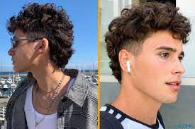
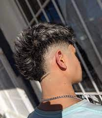
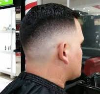

Tipo de Cortes


Low Fade
mantiene los lados de abajo de tu cabello lo más cerca de tu piel y se va volviendo más largo conforme va yendo hacia arriba.

Low Fade en V
Es dejar el volumen en la parte de atrás para que no se mire. tan plano el cabello.

Taper Fade
Se caracteriza por tener el cabello muy corto en los lados y la parte posterior de la cabeza, y un cabello ligeramente más largo en la parte superior.
Mullet
es un estilo que se caracteriza por llevar la parte de adelante corta, tanto el flequillo como los lados, y la parte de atrás más larga, cubriendo la nuca.
Mohicano
En esencia se caracteriza por llevar los laterales totalmente rapados al ras, mientras que en la parte superior el cabello va a un largo medio.
Disminución
Se trata de un tipo de corte de pelo degradado, generalmente masculino, donde el cabello está muy recortado en la nuca, patillas y laterales de la cabeza, volviéndose más largo en la parte superior de la misma.
